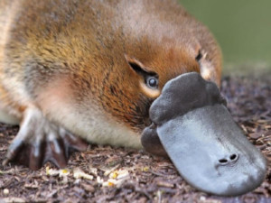
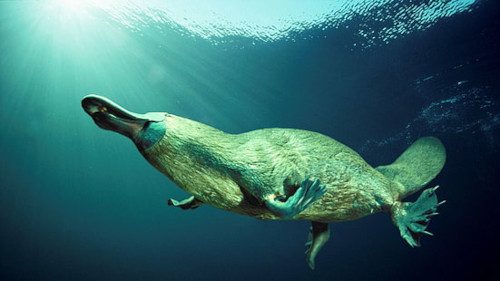
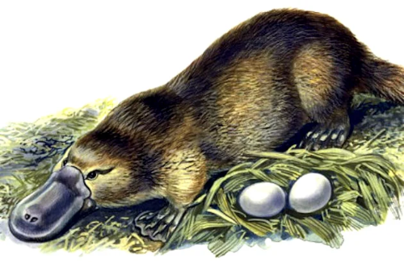
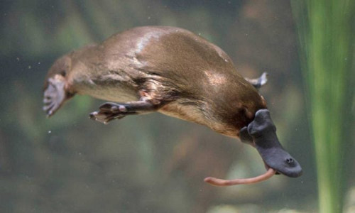
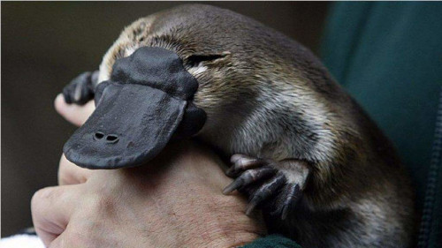

Ornintorrinco
O ornitorrinco (Ornithorhynchus anatinus) é um mamífero australiano pertencente à Ordem Monotremata, apresentando como principal característica o fato de ser um mamífero que põe ovos. Ele é o único representante da Família Ornithorhynchidae.
Esse animal é bastante peculiar e apresenta algumas características incomuns aos demais mamíferos, como a presença de um bico, membrana nas patas e ferrões ligados a uma glândula de veneno.
O ornitorrinco passa a maior parte do tempo na água e de lá retira seu alimento, constituído principalmente de invertebrados aquáticos. Uma curiosidade sobre esse animal é o fato de seu leite possuir uma proteína com propriedades antibacterianas.
Características
O ornitorrinco (Ornithorhynchus anatinus) é um mamífero de pequeno porte, pesa em torno de 1,5 kg, mede cerca de 38 cm (cabeça e corpo) e sua cauda tem cerca de 13 cm. É um animal de hábito noturno e que passa a maior parte do tempo na água. Também pode ser encontrado descansando em galerias cavadas por ele em barrancos de rios, essas galerias podem ter até 12 metros de comprimento. Assim como os demais mamíferos, apresenta um corpo coberto de pelos, que, nele, são impermeáveis.
Como esse animal passa boa parte do tempo na água, apresenta algumas características que o permitem ficar imerso, como:
Esse animal apresenta também algumas características bastante peculiares, como:
reprodução
Uma característica peculiar do ornitorrinco está no fato de ele ser um mamífero que põe ovos. Entre os mamíferos, apenas o ornitorrinco e a equidna apresentam essa característica. As fêmeas fazem a postura de seus ovos, de um a três, em ninhos construídos durante a primavera, e mantêm-nos aquecidos até eclodirem, o que ocorre em torno de 12 dias. Os ovos medem entre 1,5 cm e 2 cm, e os filhotes, assim que os ovos eclodem, medem cerca de 2,5 cm.
Os filhotes alimentam-se lambendo o leite produzido nas glândulas mamárias e que escorre no abdome da fêmea, já que as glândulas não apresentam mamilos. A amamentação dura até o momento em que os filhotes conseguem nadar sozinhos, o que ocorre em torno de quatro meses após o nascimento.
Alimentção
O ornitorrinco é um animal carnívoro e alimenta-se principalmentoe de invertebrados que habitam o fundo dos corpos d'água, como insetos e moluscos. Seu bico possui receptores que o auxiliam a encontrar o alimento, pois identificam sinais eletromagnéticos emitidos pelos músculos de outros animais. Ao alimentar-se, acaba ingerindo também lama e cascalhos, que ficam armazenados, com o alimento, nas bochechas. Em seguida o alimento é triturado, sendo o cascalho essencial nesse processo, pois, como dito, os ornitorrincos adultos não possuem dentes.
curiosidades
Pode viver cerca de 20 anos na natureza.
O leite do ornitorrinco apresenta uma proteína com propriedades antibacterianas e vem sendo estudado para uma possível utilização na produção de um novo tipo de antibiótico, o que poderia contribuir no combate às superbactérias.
Os machos contêm em seu veneno um hormônio que atua liberando insulina, diminuindo assim a concentração de glicose no sangue. Como o hormônio produzido por esses animais tem ação mais duradoura do que o produzido pelo ser humano, ele vem sendo estudado para que, futuramente, possa ser utilizado no tratamento da diabetes.
Conservção
O ornitorrinco é um animal que sofre com os efeitos da caça, da destruição de seu habitat e das mudanças climáticas, levando a uma declínio em sua população. A caça intensa desses animais iniciou-se no século XVII pelos europeus que foram atraídos por sua pele macia e impermeável. A caça dos ornitorrincos foi proibida no século XX.
Devido ao declínio das populações de ornitorrinco, a espécie está classificada como “quase ameaçada” de extinção pela União Internacional para a Conservação da Natureza e dos Recursos Naturais (IUCN). Caso as políticas de conservação para a espécie não sejam eficazes, a espécie poderá entrar em extinção.
artigo feito por Helivania Sardinha dos Santos